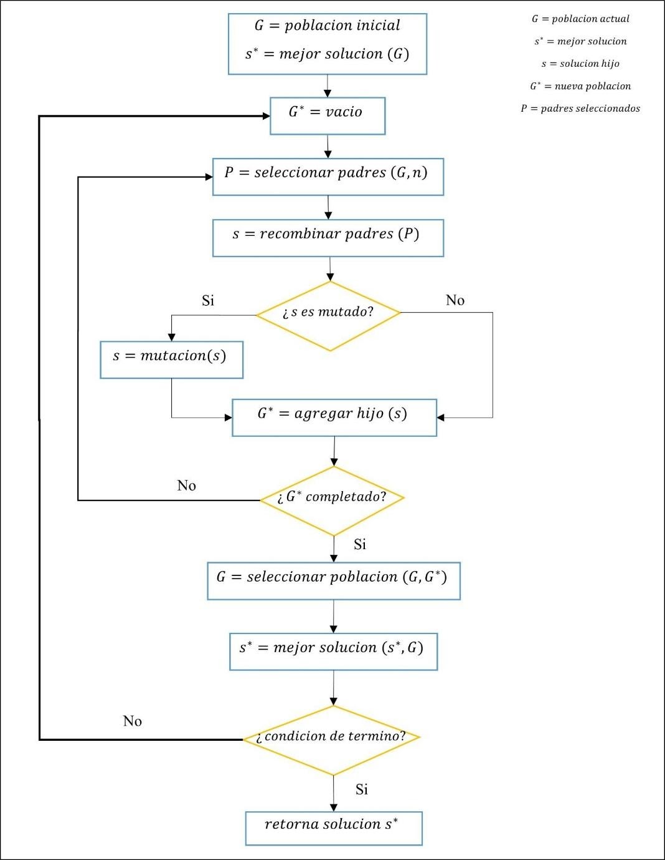

El algoritmo genético es una metaheurística de población, conceptualmente se basa en el principio de evolución de los seres vivos, planteado por Darwin en 1859. En este, se indica que los seres vivos tienen la necesidad de reproducirse, con el fin de generar descendencia, es en este punto en donde se genera una competencia entre los individuos de una misma especie, ya que un espécimen fuerte tiene una alta capacidad de sobrevivencia en comparación a sus pares, presentando una mayor probabilidad de generar descendientes. Esto implica que los genes de los mejores sujetos se propagarán en sucesivas generaciones, provocando de esta manera, mutaciones que originan la evolución en nuevas generaciones, teniendo esta mayor capacidad de sobrevivencia que sus antecesores. De igual forma que sus antecesores, las nuevas generaciones volverán a reproducirse y seguirán creándose evoluciones que permitan adaptarse al ambiente que habitan.
En 1975 John Holland crea los principios básicos del algoritmo genético, el cual es una analogía directa al principio de evolución de Darwin, en donde las soluciones encontradas en el problema del vendedor viajero son individuos. Ya que esta metaheurística es de tipo poblacional, la forma de evaluar cada iteración (generación) es a partir de un conjunto de soluciones, el cual es llamando población. En cada generación, se realizan cruzamientos entre padres para generar nuevos hijos, además de aplicar un factor de mutación que permite explorar el espacio de búsqueda. Por último, se seleccionan los mejores hijos y/o padres para generar una nueva población.
Con el fin de realizar el proceso de selección de la mejor solución con algoritmo genético, se necesitan llevar a cabo los siguientes pasos:
Para facilitar el proceso de compresión del algoritmo, se ha diseñado un diagrama de flujo, que muestra gráficamente la ejecución de este:
Desarrollado por Jorge Polanco & Javier del Canto